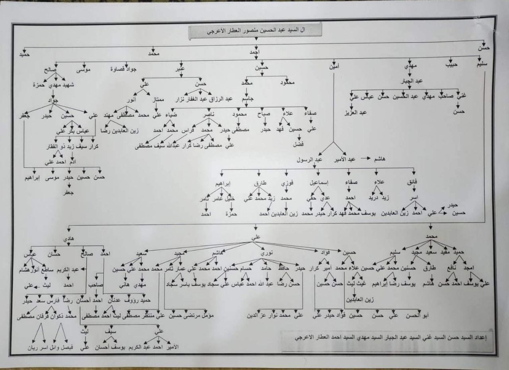
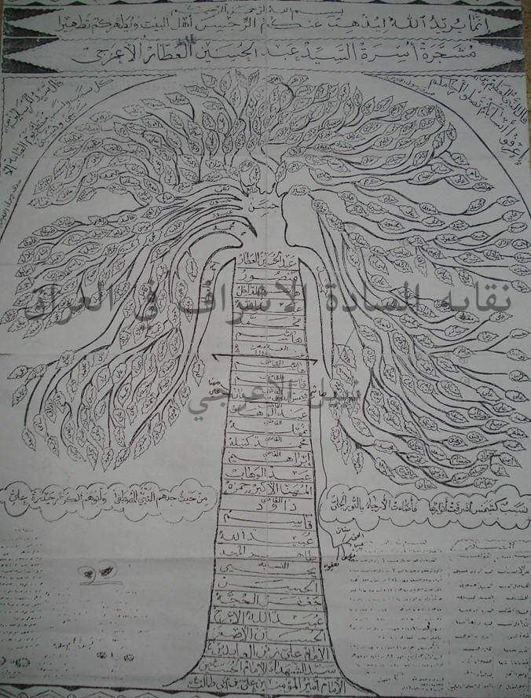

فخذ ال سيد احمد العطار الأعرجي
النسب
سيد

عشيرة السادة الأعرجية ( الأعرجي _ الأعرج )
يرأسهم السيد حاكم السيد علي صادق الأعرجي , وينتشرون تقريباً في كافة محافظات العراق ويتفرع الأعرجيون الى ال التالية :
الأعرجية وهم سادة حسينيون علويون من أعقاب أبي علي عبيد الله الأعرج بن الحسين الأصغر بن علي بن الحسين بن علي بن أبي طالب عليهم السلام أجمعين , وجدهم عبيد الله الأعرج , وهناك عدة روايات لتلقيبه بالأعرج , ومنها :
- 1- انه لقب بالأعرج لانه اذا بدأ الصلاة نسي مايدور حوله وعرجت روحه الى السماء فلقبه جده الأمام علي زين العابدين عليه السلام بالأعرج .
- 2- عند أنتصار الدعوة العباسية , كان هناك مرشحان للخلافة العباسية وهما : أبو العباس السفاح وعبيد الله الأعرج , وقد بويع أبو العباس لآنه الأكبر سناً , وحين قام عبيد الله الأعرج لمبايعته تراجع من مكانه الى الخلف فسقط من أعلى السطح فأنكسرت ساقه وصار يلقب بالأعرج .
- 3- كان في أحدى رجليه نقص فلقب بالأعرج .
